워드프로세서-(구-1급) (2005-03-06 기출문제)
1과목: 워드프로세싱 일반
1. 다음의 보기에서 설명하는 워드프로세서의 기능은?
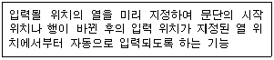
- 인덴트(Indent)/아웃덴트(Outdent)
- 옵션(Option)
- 다단 편집
- 래그드(Ragged)
(정답률: 82%)

2. 다음 중 인쇄용지에 대한 설명으로 옳은 것은?
- 낱장 용지의 가로:세로의 비율은 모두 루트 2 : 루트 3의 비율이다.
- 공문서의 표준 규격은 B4(257㎜×364㎜)이다.
- 연속 용지는 한 행에 인쇄할 수 있는 문자의 수에 따라 A판과 B판 용지로 구분된다.
- 낱장 용지의 규격은 전지의 종류와 전지를 분할한 횟수를 사용하여 표시한다.
(정답률: 79%)
3. 다음 중 워드프로세서의 표시기능에 대한 설명으로 옳지 않은 것은?
- 포인트는 문자의 크기 단위로 1포인트는 보통 0.351mm이다.
- 장평이란 문자의 가로 크기에 대한 세로 크기의 비율을 말한다.
- 줄(행) 간격이란 윗줄과 아래줄의 간격으로 단위는 줄에서 크기가 가장 큰 글자를 기준으로 간격을 조정하는 비례 줄 간격 방식을 디폴트로 제공한다.
- 자간이란 문자와 문자 사이의 간격을 의미한다.
(정답률: 85%)
4. 다음 여러 가지 용어에 대한 설명 중에서 옳지 않은 것은?
- EDI : 네트워크를 통한 업무의 교환 시스템으로 문서의 표준화를 전제로 운영된다.
- DTP : 전자출판 또는 탁상 출판
- E-mail : 네트워크를 이용한 전자우편
- CWP : 문서 작성시 사용할 수 있도록 만들어 놓은 그래픽 데이터의 모음
(정답률: 83%)
5. 다음 중 기억장치에 대한 설명으로 옳지 않은 것은?
- 기억장치는 처리 속도와 사용 용도, 기억 용량의 크기 등에 따라 캐시기억장치, 주기억장치, 보조기억장치 등으로 나누어진다.
- 주기억장치는 프로그램 기억 장소, 입력 데이터 기억 장소, 작업 장소 및 출력 데이터 기억 장소로 사용되며, 내부기억장치라고도 한다.
- 주기억장치는 중앙처리장치(CPU)보다 실행 속도가 늦기 때문에 이를 보완하기 위해 개발된 것이 플래시메모리(Flash Memory)이다.
- 보조기억장치는 주기억장치에 있는 프로그램이나 데이터를 별도의 기억장치에 기억시켜 두었다가 필요할 때에 사용한다.
(정답률: 87%)
6. 공문서의 두문에 포함되는 것은?
- 행정기관의 주소
- 행정기관명
- 제목
- 발신명의
(정답률: 66%)
7. 다음 중 전자출판에서 자간의 미세 조정으로 특정문자들의 간격을 조정하는 기능은?
- 디더링(Dithering)
- 커닝(Kerning)
- 리터칭(Retouching)
- 리딩(Leading)
(정답률: 87%)
8. 다음 워드프로세서의 용어에 대한 설명 중 옳지 않은 것은?
- 하드 카피(Hard Copy) : 화면에 보이는 내용을 종이에 인쇄하는 것을 의미한다.
- 소프트 카피(Soft Copy) : 문서의 내용을 화면에 출력하거나 디스크에 저장하는 것을 말한다.
- 피치(Pitch) : 인쇄할 때 문자와 문자 사이의 간격을 나타내는 단위로 1인치에 인쇄되는 문자수를 말한다.
- 레이아웃(Layout) : 화면의 어느 위치에서든지 편집이 가능한 편집기를 말한다.
(정답률: 74%)
9. 다음 중 워드프로세서의 편집기능에 대한 설명으로 옳지 않은 것은?
- 리딩(Leading)은 사용자가 키보드나 마우스로 입력한 순서를 보관해 두었다가 한꺼번에 재실행하는 기능이다.
- 메일 머지(Mail Merge)는 초청장이나 안내장처럼 내용은 같고 받는 사람의 이름과 주소만 다른 경우에 유용하게 사용할 수 있다.
- 다단 편집이란 하나의 편집 화면을 여러 개의 구역으로 나누어서 문서를 작성하는 기능이다.
- 사전기능은 단어 전체 또는 일부만 입력해 주면 그 즉시 의미를 확인할 수 있게 해준다.
(정답률: 78%)
10. 전자관인에 대한 설명중 옳지 않은 것은?
- 전자관인은 일반관인과 동일한 효력을 발생시킨다.
- 전자문서의 작성기관 및 변경여부를 확인 할 수 있도록 비대칭 암호화 방식을 이용한다.
- 전자관인 생성키로 생성한 정보로 일반 전자문서에 공통적이다.
- 컴퓨터 등 정보처리 능력을 가진 장치에 의하여 전자적인 이미지 형태로 사용되는 관인을 '전자이미지관인'이라 한다.
(정답률: 56%)
11. 머리말에 대한 설명으로 옳지 않은 것은?
- 각 쪽의 위(상단) 부분에 인쇄되는 문구이다.
- 홀·짝 쪽에 다른 내용의 머리말이 가능하다.
- 형식은 일반적으로 꼬리말과 동일하거나 유사하다.
- 미주와 같은 의미이다.
(정답률: 83%)
12. 다음 보기의 내용과 관련이 없는 사항은?
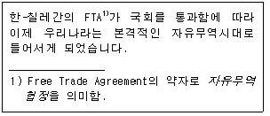
- 색인
- 내어쓰기
- 각주
- 기울임(이태릭체)
(정답률: 74%)
13. 다음 중 워드프로세서에서 개체를 선택한 후 Ctrl 키를 누르고 Drag & Drop을 했을 때와 같은 결과가 나오는 단축키는?
- Ctrl + C, Ctrl + V
- Ctrl + X, Ctrl + V
- Alt + C, Alt + V
- Alt + X, Alt + V
(정답률: 87%)
14. 다음 중 개체 묶기(그룹화)를 하기 위해 연속적인 선택을 하려면 마우스와 함께 어떤 키를 사용해야 하는가?
- Ctrl 키
- Shift 키
- Alt 키
- Tab 키
(정답률: 78%)
15. 다음 중 KS X 1001 완성형 한글 코드에 대한 설명으로 옳지 않은 것은?
- 완성된 각각의 문자에 코드 값을 기억시켜 한글을 표현한다.
- 국제 규격을 따랐기 때문에 정보 교환시 제어 문자와 충돌이 발생하지 않는다.
- 자음, 모음, 받침만 기억하므로 조합형에 비해 용량을 적게 차지한다.
- 코드 값이 부여된 완성형 글자 외에는 사용할 수 없다.
(정답률: 70%)
16. "관인에는 행정기관의 명의로 발송 또는 교부하는 문서에 사용하는 ( )과 행정기관의 장 또는 보조기관의 명의로 발송 또는 교부하는 문서에 사용하는 ( )으로 구분한다" 에서 ( )안에 들어갈 적당한 용어를 순서대로 나열하면?
- 청인, 직인
- 직인, 청인
- 직인, 인영
- 인영, 직인
(정답률: 70%)
17. 문서 분량이 같은 파일을 블록 복사, 블록 이동, 블록 삭제 기능을 이용하여 각각 작업한 후 변화한 문서 분량이 큰 문서에서 작은 문서의 순서로 바르게 나열한 것은?
- 블록 복사 > 블록 이동 > 블록 삭제
- 블록 복사 > 블록 삭제 > 블록 이동
- 블록 이동 > 블록 복사 > 블록 삭제
- 블록 이동 > 블록 삭제 > 블록 복사
(정답률: 80%)
18. 다음 중 워드프로세서의 용어에 대한 설명으로 옳지 않은 것은?
- 화면에 표시되는 화상의 최소 구성 단위인 픽셀(Pixel)은 많을수록 해상도가 높다.
- 중앙처리장치와 주기억장치간의 속도 차이를 극복하기 위해 사용되는 메모리를 가상메모리라고 한다.
- 스풀(Spool)은 인쇄를 하면서 동시에 문서 작성이나 편집 등의 처리를 하는 기능이다.
- 보일러 플레이트(Boiler Plate)는 문서 내의 머리말, 꼬리말, 마진 등을 표시하기 위해 별도로 설정하는 공간을 의미한다.
(정답률: 75%)
19. <보기 1>의 문장이 <보기 2>의 문장으로 수정되기 위해 필요한 교정부호들로만 올바르게 짝지어진 것은?
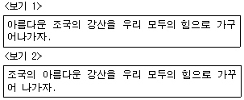
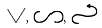
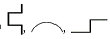
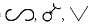
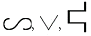
(정답률: 93%)
20. 다음 중에서 문서의 분량이 증가될 수 있는 교정부호들로만 짝지어진 것은?
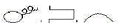
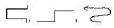
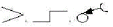
(정답률: 88%)
2과목: PC 운영 체제
21. 한글 Windows 98의 [그림판] 프로그램에서 선택된 개체에 대한 조작을 하기 위해 사용하는 [이미지] 주메뉴의 하위 메뉴가 아닌 것은?
- 대칭 이동/회전
- 늘리기/기울이기
- 색반전
- 글맵시
(정답률: 78%)
22. 한글 Windows 98의 [시스템 도구] 중에서 [디스크 정리]를 이용하여 할 수 없는 기능은?
- 임시 인터넷 파일의 제거
- 휴지통 비우기
- 다운로드한 프로그램 파일의 제거
- Windows 시스템 파일의 제거
(정답률: 63%)
23. 다음 중 한글 Windows 98에서 동일한 네트워크 상의 컴퓨터에 있는 공유 폴더 목록을 찾기위해 선택해야 하는 것은?
- [시작]-[찾기]-[파일 또는 폴더]
- [시작]-[찾기]-[컴퓨터]
- [시작]-[찾기]-[인터넷]
- [시작]-[찾기]-[사람]
(정답률: 57%)
24. 다음 중 한글 Windows 98에서 시스템에 설치된 하드웨어의 IRQ 번호를 얻기 위해 사용하는 [제어판]의 프로그램은?
- 네트워크
- 멀티미디어
- 시스템
- 새 하드웨어 추가
(정답률: 59%)
25. 한글 Windows 98에서 응용 프로그램들의 수행에 영향을 주는 INI 파일들은 서로 다른 곳에 위치해 있을 수 있다. 이러한 분산된 INI 파일들에 대해 관련 정보들을 관리하기 위한 계층적 데이터베이스를 무엇이라고 하는가?
- 레지스트리
- 폴더
- 롬-바이오스
- 클립보드
(정답률: 76%)
26. 다음 중 한글 Windows 98에서 [휴지통]에 관한 설명으로 옳지 않은 것은?
- 휴지통의 용량은 운영체제에 의해서 항상 고정된 크기를 가진다.
- 휴지통에는 삭제된 파일들이 보관되며, 삭제된 파일을 복원할 수도 있다.
- 휴지통의 등록정보를 설정하여 파일이 휴지통에 보관되지 않고 바로 삭제되도록 할 수 있다.
- 삭제되었던 파일을 복원하면 삭제되기 전과 동일한 폴더에 복원된다.
(정답률: 81%)
27. 한글 Windows 98의 네트워크 환경에서 사용하는 TCP/IP에 대한 설명으로 옳지 않은 것은?
- TCP 프로토콜과 IP 프로토콜의 결합적 의미이다.
- [케이블 직접 연결]을 통한 통신시에 필요한 프로토콜이다.
- 다양한 종류의 컴퓨터 운영체제에 대하여 네트워킹 기능을 제공한다.
- [제어판]의 [네트워크]에서 설정할 수 있다.
(정답률: 53%)
28. 한글 Windows 98에서 시작 메뉴의 [실행]을 선택하고 'winipcfg.exe'를 입력하여 실행하였다면?
- 현재 TCP/IP 네트워크 구성을 보여준다.
- TCP/IP 구성 설정값을 변경할 수 있게 해준다.
- 원격 컴퓨터에 대한 연결 상태를 점검해준다.
- 네트워크 라우팅 테이블을 수동으로 제어하게 해준다.
(정답률: 49%)
29. 한글 Windows 98에서 일정 시간 동안 아무런 작업을 하지 않으면 모니터와 하드디스크를 자동으로 꺼서 절전 모드로 바꾸는 기능은?
- UPS 기능
- Back Up 기능
- MTU 설정기능
- OnNow 기능
(정답률: 81%)
30. 다음 중 한글 Windows 98에서 파일 또는 폴더의 [찾기] 창에 대한 설명으로 옳지 않은 것은?
- 파일이나 폴더의 속성을 조건으로 검색할 수 있다.
- 바뀐 날짜의 이전 몇 일이라는 조건으로 검색할 수 있다.
- 포함하는 문자열을 조건으로 검색할 수 있다.
- 파일 크기의 조건으로 검색할 수 있다.
(정답률: 50%)
31. 한글 Windows 98에서 응용 프로그램을 실행하는 도중에 시스템이 정지되어 아무 반응이 없을 경우에 원인을 제공한 특정 프로그램을 강제적으로 종료시킬 때 사용하는 바로가기 키는?
- Ctrl + Esc
- Ctrl + C
- Ctrl + S
- Ctrl + Alt + Del
(정답률: 88%)
32. 다음 중 한글 Windows 98의 [제어판]에 있는 [키보드]의 등록정보 창에서 설정할 수 있는 옵션 기능이 아닌 것은?
- 필터키 사용 설정
- 키 재입력 시간 설정
- 커서 깜박임 속도 설정
- 설치된 키보드 언어 및 키 배치 설정
(정답률: 67%)
33. 한글 Windows 98의 [제어판]에 있는 [프로그램 추가/제거]를 이용하여 변경할 수 있는 Windows 구성요소가 아닌 것은?
- 프린터
- 멀티미디어
- 보조 프로그램
- 시스템 도구
(정답률: 64%)
34. 한글 Windows 98의 [보조프로그램]에 있는 [메모장] 프로그램에 대한 설명으로 옳지 않은 것은?
- 시간과 날짜를 문서의 끝에 자동으로 추가되도록 하려면 문서의 첫 행 왼쪽에 .LOG라고 입력한다.
- 크기가 1M 이하인 문서 파일을 작성하고 편집할 수 있다.
- 서식을 사용할 수 없다.
- 메모장에서 여백, 머리글, 바닥글 등을 지정, 변경할 수 있다.
(정답률: 47%)
35. 한글 Windows 98에서 프린터 설치와 운영에 관한 설명으로 옳지 않은 것은?
- 하나의 시스템에는 여러 대의 프린터를 설치할 수 있다.
- 로컬 프린터 뿐만 아니라 네트워크 프린터도 설치할 수 있다.
- 기본 프린터의 설정은 1대만 가능하다.
- 폴더 공유는 가능하지만 프린터 공유는 불가능하다.
(정답률: 78%)
36. 다음 중 한글 Windows 98의 작업 표시줄과 관련된 내용으로 옳지 않은 것은?
- 작업 표시줄은 화면 위쪽이나 아래, 왼쪽, 오른쪽에 위치시킬 수 있다.
- 작업 표시줄은 화면의 2/3를 넘지 않는 범위 내에서 크기 변경이 가능하다.
- 작업 표시줄의 위쪽 경계선에 마우스를 위치시킨 후 마우스로 드래그하여 작업 표시줄의 크기를 조절할 수 있다.
- 작업 표시줄을 이동하기 위해서는 작업 표시줄의 비어 있는 부분을 마우스로 드래그하면 된다.
(정답률: 77%)
37. 한글 Windows 98의 [네트워크 환경] 창에서 다른 컴퓨터의 아이콘이 표시되지 않은 경우에 해결 방법으로 옳지 않은 것은?
- 자신의 컴퓨터가 네트워크 케이블로 올바르게 연결되었는지를 점검한다.
- 네트워크에 연결된 다른 컴퓨터가 제대로 동작하고 있는지를 점검한다.
- 다른 컴퓨터의 네트워크 설정이 올바르게 되었는지를 점검한다.
- 자신의 컴퓨터 시스템의 모든 폴더를 공유 시킨다.
(정답률: 79%)
38. 한글 Windows 98의 [탐색기] 창을 사용하는 도중에 파일 또는 폴더의 [찾기] 창을 이용하기 위한 바로 가기 키는?
- Alt + TAb
- Ctrl + F
- Shift + F
- Alt + F
(정답률: 74%)
39. 한글 Windows 98에서 CD-ROM 드라이버의 열림버튼을 누르지 않고, CD를 열어 꺼낼 수 있는 방법을 설명한 것으로 올바른 것은?
- 제어판 → 시스템 → 장치드라이버 → CD-ROM → 바로 가기 메뉴 → 열기
- 제어판 → 멀티미디어 → CD음악 → 장치제어 → 꺼내기
- 윈도우 탐색기 → CD-ROM 드라이브 선택 → 바로 가기 메뉴 → 열기
- 내 컴퓨터 → CD-ROM 드라이브 선택 → 바로 가기 메뉴 → 꺼내기
(정답률: 59%)
40. 한글 Windows 98에서 문제 해결방법에 관한 설명으로 가장 옳지 않은 것은?
- [메모리 부족]일 경우에는 가상 메모리를 충분히 확보할 수 있도록 휴지통, 임시파일, 사용하지 않는 프로그램 등을 삭제한다.
- [디스크 공간 부족]일 경우에는 열려진 프로그램이나 문서 중 불필요한 것을 종료한다.
- [정상적인 부팅이 안되는 경우]에는 안전모드로 부팅하여 문제 해결후 정상모드로 재부팅한다.
- [시스템 속도 문제]일 경우에는 디스크 조각 모음을 하여 하드 디스크의 단편화를 제거한다.
(정답률: 62%)
3과목: 컴퓨터 및 정보활용
41. 하나의 프로세서(CPU)로 여러 개의 프로그램을 동시에 처리하는 방식을 일컫는 말은?
- 멀티프로세싱
- 멀티프로그래밍
- 분산처리
- 멀티플렉싱(Multiplexing)
(정답률: 69%)
42. 다음 중에서 CPU의 성능 차이를 결정하는 요인으로 옳지 않은 것은?
- 레지스터(Register)의 수
- 파이프라인(Pipeline)등 병렬처리 방식 채택 여부
- 인터럽트 처리 루틴의 보유 여부
- RISC 또는 CISC방식 채택 여부
(정답률: 48%)
43. 16-칼라 그래픽(16-color graphic)은 각 픽셀(pixel)이 16 가지의 색상들 중 하나를 갖도록 하는 방식이다. 다음 중 16-색상 그래픽을 이용하여 640 × 480 해상도의 화면을 표현하는데 필요한 최소의 메모리 공간은 얼마인가?
- 153,600 bytes
- 307,200 bytes
- 1,228,800 bytes
- 4,915,200 bytes
(정답률: 53%)
44. 다음 중 일반 PC 형태가 아니며 주로 보드(회로기판) 형태의 반도체 기억소자에 응용 프로그램을 탑재하여 컴퓨터의 기능을 수행하는 시스템을 무엇이라고 하는가?
- 임베디드 시스템
- 분산처리 시스템
- 병렬처리 시스템
- 시분할처리 시스템
(정답률: 79%)
45. 다음 중 멀티미디어 PC에 대한 설명으로 가장 적절하지 않은 것은?
- 멀티미디어 데이터를 재생, 처리할 수 있는 PC를 의미한다.
- 고성능 CPU, 고해상도 그래픽 카드, 사운드 카드, 스피커, CD-ROM 드라이브 등이 필요하다.
- 사운드 카드는 16비트 사운드 카드여야 한다.
- 멀티미디어 저작 시스템은 멀티미디어 콘텐츠를 통합하기 위한 시스템을 말한다.
(정답률: 71%)
46. 다음 중 음성이나 비디오 등의 아날로그 데이터를 PCM 기술을 사용하여 전송에 적합한 디지털 형태로 변환시키고, 다시 이 디지털 형태를 아날로그 데이터로 복구시켜 주는 장치를 무엇이라고 하는가?
- 리피터(Repeater)
- 코덱(CODEC)
- DSU
- DTU
(정답률: 78%)
47. 다음 중에서 라우터(Router)의 역할이 아닌 것은 무엇인가?
- 전체 네트워크를 작은 단위의 서브넷(Subnet)으로 구분한다.
- 보안에 문제가 있는 경우 수신한 신호를 폐기한다.
- 여러개로 나누어진 개별 네트워크를 연결하여 확장한다.
- 수신한 신호를 목적지 컴퓨터로 전달하기 위하여 중계한다.
(정답률: 66%)
48. SCSI 장치가 인식되지 않을 때 점검해야 할 사항으로 옳지 않은 것은?
- 스카시 어댑터카드가 제대로 장착되었는지 다른 장치와 IRQ 충돌은 없는지 점검한다.
- SCSI 하드디스크의 Master/Slave 점퍼 설정을 점검한다.
- SCSI 장치의 ID 충돌은 없는지 점검한다.
- SCSI 마지막 장치에 터미네이션 점퍼 설정이 되었는지 점검한다.
(정답률: 55%)
49. 다음 중 컴퓨터 종류에 대한 설명으로 옳지 않은 것은?
- 하이브리드 컴퓨터는 아날로그 컴퓨터와 디지털 컴퓨터의 장점을 결합하여 만든 컴퓨터이다.
- 사용 목적에 따라서 전용(특수용) 컴퓨터와 범용 컴퓨터로 구분된다.
- 지형분석, 기상분석, 우주항공산업 등과 같은 고도의 정밀도와 정확한 과학적 수치계산에 슈퍼 컴퓨터가 일반적으로 사용된다.
- 처리하는 데이터의 형태에 따라서 마이크로 컴퓨터, 미니 컴퓨터, 슈퍼 컴퓨터 등으로 구분한다.
(정답률: 62%)
50. 다음 문장의 ( ) 안에 들어갈 용어를 순서대로 나열한 것은?
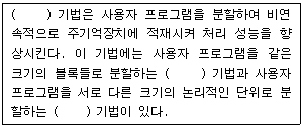
- 가상 기억장치(Virtual Memory), 세그먼테이션(Segmen- tation), 페이징(Paging)
- 가상 기억장치(Virtual Memroy), 페이징(Paging), 세그먼테이션(Segmentation)
- 중첩 기억장치(Nested Memory), 페이징(Paging), 세그먼테이션(Segmentation)
- 중첩 기억장치(Nested Memory), 세그먼테이션(Segmen- tation), 페이징(Paging)
(정답률: 70%)
51. 정보통신 시스템의 기본 구성요소에 해당되지 않는 것은?
- 가입자 단말장치
- 데이터 처리계
- 데이터 전송계
- 다중 시스템
(정답률: 58%)
52. 다음 중 파일 바이러스에 대한 설명으로 옳은 것은?
- 시스템 파일을 대상으로 자신의 코드를 복제하여 다른 파일을 감염시킨다.
- 부트섹터와 파일 모두에 기생한다.
- E-mail을 통해 감염되며 부트섹터를 손상시킨다.
- 브레인 바이러스, 미켈란젤로 바이러스 등이 있다.
(정답률: 58%)
53. 다음 보기의 내용은 어떤 통신망에 대한 설명인가?
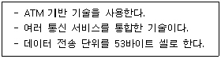
- ISDN
- B-ISDN
- VXDL
- IMT2000
(정답률: 54%)
54. 보안이 필요한 네트워크의 통로를 단일화하여 관리함으로써 외부로부터의 불법적인 접근을 막는 시스템을 무엇이라 하는가?
- 턴키 시스템(Turnkey System)
- 가상 사설 네트워크(VPN)
- 펌웨어(Firmware)
- 방화벽(Firewall)
(정답률: 85%)
55. 다음 중 디지털 컴퓨터에 대한 설명으로 올바르지 않은 것은?
- 연산 형식은 사칙연산이다.
- 입력 형태는 부호화된 숫자, 문자이다.
- 기억이 용이하고 반영구적이다.
- 구성회로는 증폭회로이다.
(정답률: 67%)
56. 다음 보기의 내용은 어떤 기억장치를 설명한 것인가?
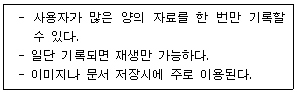
- ROM
- DRAM
- WROM
- SRAM
(정답률: 59%)
57. 다음 중 GIF 파일 형식에 대한 설명으로 옳지 않은 것은?
- 애니메이션 파일 형식으로 움직이지 않는 이미지는 나타낼 수 없다.
- 최대 256개의 색으로 제한된 이미지 압축 형식이다.
- 웹 문서에서 사용될 수 있는 형식이다.
- 비트맵 방식이다.
(정답률: 60%)
58. 다음 설명에 해당하는 시스템 보안 기법은?
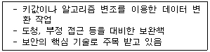
- 방화벽(Firewall)
- 보안관제시스템
- 암호화
- 침입탐지시스템(IDS)
(정답률: 63%)
59. 사무실에 할당받은 공인 IP가 부족해서 내부적으로 인트라넷을 구성하기 위해 사설 IP를 구성하려고 한다. 다음 IP 주소 중 사설망을 구축하는데 사용할 수 있는 주소는?
- 147.46.101.100
- 192.168.101.100
- 203.232.129.100
- 239.150.101.100
(정답률: 62%)
60. 전송선로의 구성 중에서 포인트 투 포인트(Point to point)방식에 대한 설명으로 거리가 먼 것은?
- 분산된 소량의 데이터가 있을 때 효과적
- 유지 보수가 쉬움
- 데이터의 양이 많을 때 주로 사용
- 중앙 컴퓨터와 터미널이 1:1로 연결
(정답률: 45%)